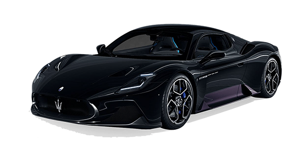
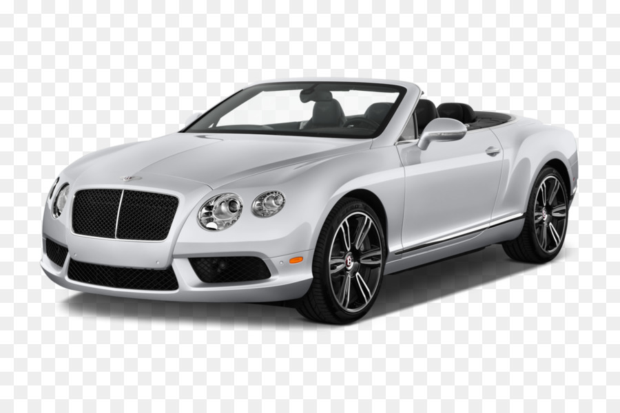
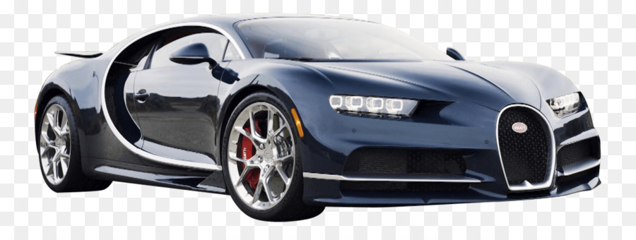

Dobrodosli
| Proizvodjac | Model | Godiste | Cijena po danu | Tip Goriva | Slika | Opis |
|---|---|---|---|---|---|---|
| Maseratti | MC20 | 2022 | 150 | Benzin |  | Novi MC20 Cielo vozi u pratnji novog V6 Nettuno motora koji je debitirao u MC20 2020. Upravo predstavljeni MC20 Cielo nudi savršenu mješavinu sportskog duha i luksuza zahvaljujući jedinstvenoj mogućnosti za ovaj segment – inovativnom staklenom krovu na uvlačenje. Vise |
| Bentley | Continental GT | 2023 | 200 | Benzin |  | Sjedeći u Continental GT Speedu imate osjećaj da ste u savršeno krojenom, luksuznom odijelu, a osjeti dodira, vida i mirisa preplavljeni su kvalitetom. Motor W12 s 650 konjskih snaga od nule do 60 km/h dolazi za oko 3.1 sekundu, što je impresivno kad se uzme u obzir težina automobila od oko 1.950 kilograma. Mjenjač s dvostrukom spojkom, osam brzina i automatskim prijenosom glatko se kreće kroz brzine, a kočnice automobil zaustavljaju u trenu. Vise |
| Bugatti | Veyron | 2012 | 250 | Benzin |  | Veyron pokreće Volkswagenov motor od 16 cilindara (dva motora od 8 cilindara spojena u jedan), 64 ventila i 1001 konjsku snagu. Motor hladi čak 10 hladnjaka. Mjenjač je BorgWarner-ov sedmostupanjski poluautomatski DSG i omogućuje promjenu brzine za vrijeme od 8 milisekundi. Vise |